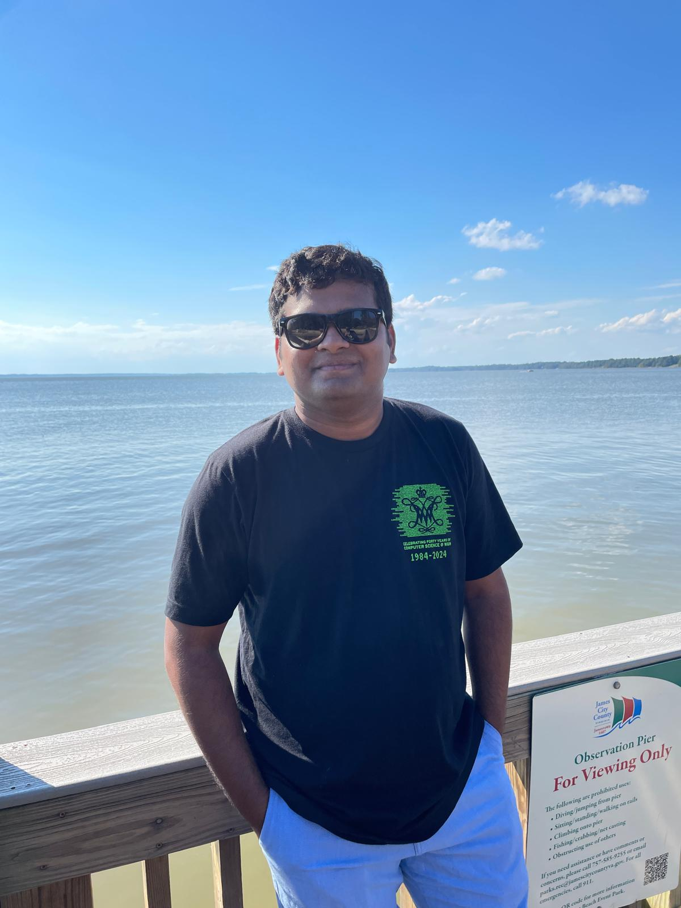

Robiul Islam (he/him)
| miislam [at] wm [dot] edu | |
| Integrated Science Center, ISC-IV, 104 Jamestown Rd, Williamsburg, VA 23185, United States | |
Robiul Islam is a Doctoral Student in Computer Science at School of Computing, Data Science & Physics at William & Mary, currently serving as a Teaching Assistant at the Computer Science Department and doing research under the supervision of Dr. Trey Woodlief. His research focuses on Autonomous Systems Safety, LLM4AD, SE4AD, and Perception. He specializes in building lightweight, production-ready AI systems for real-world applications in autonomous systems safety.
News
| February 27, 2026 | 🎉 Presented Poster at Graduate Research Symposium (GRS-26). |
| February 26-27, 2026 | 📝 Served as a Tech/AV Subcommittee Chair at Graduate Research Symposium (GRS-26). |
| February 2, 2026 | Become Ph.D. Candidate. |
| October 1, 2025 | 📝 Served as a Junior PC Member at MSR-26, held in Brazil. |
| September 28, 2025 | 🚀 Our team Musketeers secured 7th position(by points 5th) at TribeCTF 2025, Organized by William and Mary CyberSecurity Center. |
| November 9, 2024 | Grad Volunteer at Graduate Student Symposium |
| October 1, 2024 | Best Speaker on debate Is autonomous driving safer/better than human-operated driving?, Thanks to Prof. Sidi Lu for her wonderful gift |
| August 27, 2024 | Started Graduate Teaching Assistant at Dept. of Computer Science |
| August 25, 2024 | Started my Ph.D. at William and Mary |
Biography
My journey into research began during my fourth year of undergraduate studies, when I became deeply enthuasiastic about the transformative potential of artificial intelligence and machine learning. This passion led me to pursue a PhD in Computer Science at William and Mary, where I have been fortunate to work under the mentorship of Dr. Trey Woodlief. My research has been driven by a desire to develop practical AI solutions that can make a tangible impact on real-world problems, particularly in the domains of autonomous systems safety and security.


Recent Publications
-
Doctor of Philosophy (PhD) in Computer Science, Fall 2024 - Present
William and Mary, Williamsburg, Virginia, USA -
BSc in Computer Science and Engineering, Spring 2019 - Fall 2022
Uttara University, Bangladesh